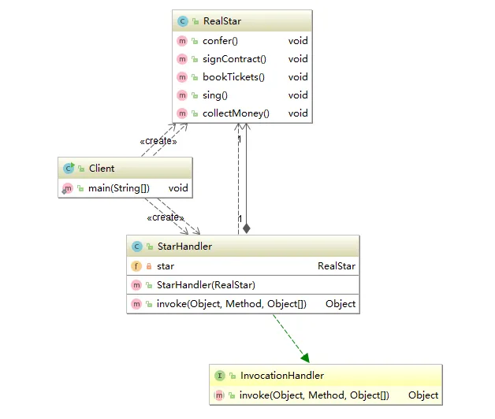

代理模式
首先想到的第一个疑问就是：代理模式和装饰器模式的区别是什么？一个判断的标准是：代理模式关注“控制访问”，装饰器模式关注“扩展功能”。
根据代理类的创建时机不同，代理又分为静态代理和动态代理。在静态代理中，代理类所实现的接口和所代理的方法都已经固定了。而动态代理中的代理类是在程序运行的时候动态生成的。
静态代理
类比（经纪人，歌手），与客户之间的关系：
public class Client {
public static void main(String[] args) {
RealStar realStar = new RealStar();
ProxyStar proxyStar = new ProxyStar(realStar);
proxyStar.sing();
}
}
动态代理
JDK动态代理
代理对象和真实对象实现相同的接口；
定义StarHandler，实现java.lang.reflect.InvocationHandler：
public class CusProxyHandler implements InvocationHandler {
private ICusA iCusA;
public CusProxyHandler(ICusA iCusA) {
this.iCusA = iCusA;
}
/*
* proxy：是动态生成的代理对象
* */
@Override
public Object invoke(Object proxy, Method method, Object[] args) throws Throwable {
System.out.println("proxy = " + proxy.getClass() + ", method = " + method); // proxy = class com.sun.proxy.$Proxy0, method = public abstract void io.itaiit.proxy.ICusB.method2()
if (proxy instanceof ICusA) {
System.out.println("is a iCusA");
}
if (proxy instanceof ICusB) {
System.out.println("is a iCusB");
}
System.out.println("before");
method.invoke(iCusA, args);
System.out.println("after");
return null;
}
}
动态生成代理：
public class Demo07 {
public static void main(String[] args) {
B b = new B();
CusProxyHandler cusProxyHandler = new CusProxyHandler(b);
ICusB o = (ICusB) Proxy.newProxyInstance(B.class.getClassLoader(), new Class[]{ICusA.class, ICusB.class}, cusProxyHandler);
// Class<?>[] interfaces = o.getClass().getInterfaces();
// System.out.println(Arrays.toString(interfaces));
// o.method2(); // 如果代理类强转为了ICusB，但是类B没有实现该接口（也就是代理类和被代理类没有实现相同的接口），调用method2的时候，会出现异常：Exception in thread "main" java.lang.IllegalArgumentException: object is not an instance of declaring class
o.method2();
// o.toString();
}
}
class B implements ICusA,ICusB {
@Override
public void method1() {
System.out.println("B.method1");
}
@Override
public void method2() {
System.out.println("B.method2");
}
}

CGLib动态代理
动态生成代理类的子类，并且重写被代理类的非final方法。
需要注意的是：动态生成的代理类会代理A类和Object类的非final的方法，包括：toString，hashCode()，因此调用toString()的时候，除了调用父类的toString()之外，还会调用hashCode()方法。
示例：
/**
* 会代理A类和Object类的非final的方法,包括: toString, hashCode()
*/
class A {
public A() {
}
public void sayHello() {
System.out.println("A.sayHello");
}
}
public static void main(String[] args) {
Enhancer enhancer = new Enhancer();
enhancer.setSuperclass(A.class);
enhancer.setCallback(new MethodInterceptor() {
@Override
public Object intercept(Object o, Method method, Object[] objects, MethodProxy methodProxy) throws Throwable {
// 排除掉Object类中的方法, 不进行代理
if (method.getDeclaringClass() == Object.class) {
return proxy.invokeSuper(obj, args); // 或直接 method.invoke(obj, args)
}
System.out.println("method = " + method + ", methodProxy = " + methodProxy + ", o = " + o.getClass());
System.out.println("before");
Object o1 = methodProxy.invokeSuper(o, objects);
System.out.println("o1 = " + o1);
System.out.println("after");
return o1;
}
});
A o = (A) enhancer.create();
// o.toString();
o.sayHello();
}
/*
输出:
method = public void io.itaiit.A.sayHello(), methodProxy = net.sf.cglib.proxy.MethodProxy@7ab2bfe1, o = class io.itaiit.A$$EnhancerByCGLIB$$61f9c417
before
A.sayHello
o1 = null
after
*/
二者的区别
JDK动态代理使用反射机制；Cglib动态代理使用ASM，通过修改字节码来生成子类；
JDK在创建动态代理对象的时候，性能高于CGLib；但是生成的代理对象在运行的时候，性能却比CGLib低；